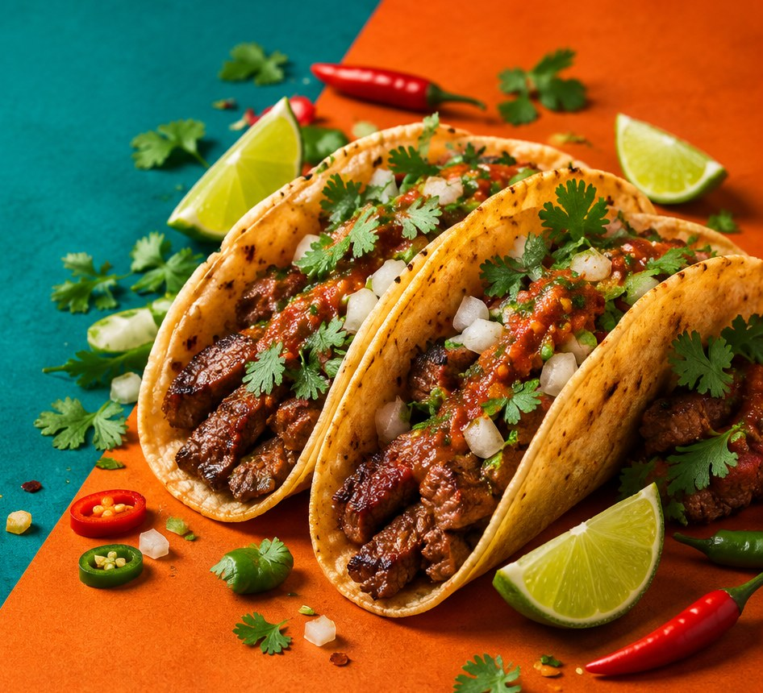
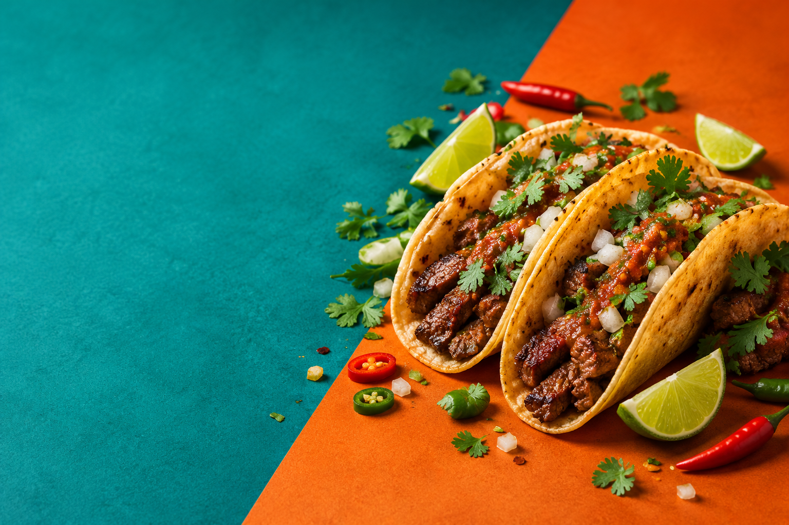

ESPECIALIDADTacos de birria
Tacos llenos de sabor, con el toque de la casa.
BUENOS TACOS, BUENOS MOMENTOS
Recetas con carácter, salsas con chispa y sabores preparados al momento.

MÁS QUE UNA TAQUERÍA
En Taviche creemos que una buena comida puede convertir cualquier día en uno memorable. Por eso juntamos tortillas calientitas, ingredientes frescos y recetas llenas de personalidad.
Ven a probarlosTU MESA TE ESPERA
Ven con hambre. Vete con una sonrisa.
Horario de ejemplo
Martes a domingo · 12:00 a 22:00